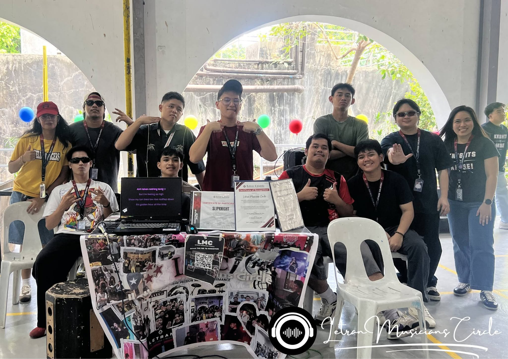

LMC
Letran Musician
Circle
LMC
Website
is currently under development. Stay tuned for updates!
We've never been touched, but touch me not — or we'll touch ourselves na lang.
WE LOVE LMC SO MUCH ARGH